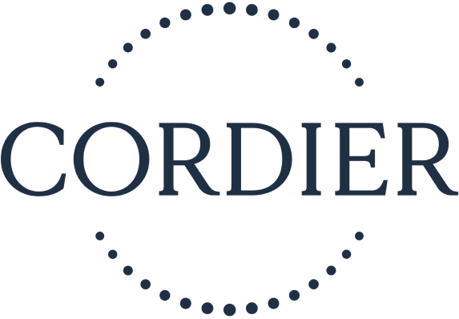

Louis TEXIER
Étudiant en BUT informatique
Mon profil:
Je suis une personne capable d'apprendre assez rapidement
et de m'adapter dans des situations complexes ou dans l'urgence.
Je suis passionné par le développement WEB et cherche à en apprendre plus.
Je suis très autonome, mais également performant lors de séances de travail en équipe.
Ma recherche:
Étudiant en 2e année de BUT informatique, je recherche un stage
de 12 semaines à partir du 17 avril, dans le développement WEB.
Langages maîtrisés:
.png "HTML")
.png "PHP")
.png "CSS")
.png "JS")
.png "Java")
Logiciels utilisés:
.png "PhpStorm")
.png "Intellij")
.png "Android Studio")
Mes Projets
Voir plusFaireply est un site de questions, réponses et votes. Le but du site est de laisser certains utilisateurs poser des questions ouvertes dont les réponses seront séparées en plusieurs sections prédéfinies par l'organisateur. Ce site a été codé entièrement en HTML, CSS et PHP, mais le projet m'a conduit à travailler d'autres langages tels que SQL et PL/SQL.
Lors d'un TD de JavaScript j'ai créé un simple jeu en ligne, le champ de mines. Le but de ce jeu est de déplacer le personnage sur le plateau et le jeu vous indiquera le nombre de mines autour de vous à ne pas toucher. Lors de ce TD j'ai pu apprendre beaucoup de base en JS, et j'ai pu implémenter des fonctionnalités supplémentaires au sujet initial.
Ce site a été, au départ, un simple sujet de devoir en cours de PPP (Projet Personnel et Professionnel), mais j'ai décidé de le faire entièrement à la main sans logiciel no-code pour développer mes compétences et en apprendre de nouvelles en autodidacte. Cela m'a permis de faire un site montrant correctement une partie de mes compétences en front-end.

Expériences
-
2022 - Laborantin dans un laboratoire viticole

Contrat saisonnier de 2 mois, Trilles / Maureilhan -
2021 - Coéquipier polyvalent, mise en rayon
Contrat saisonnier de 2 mois, Carrefour / Cazouls-Les-Béziers